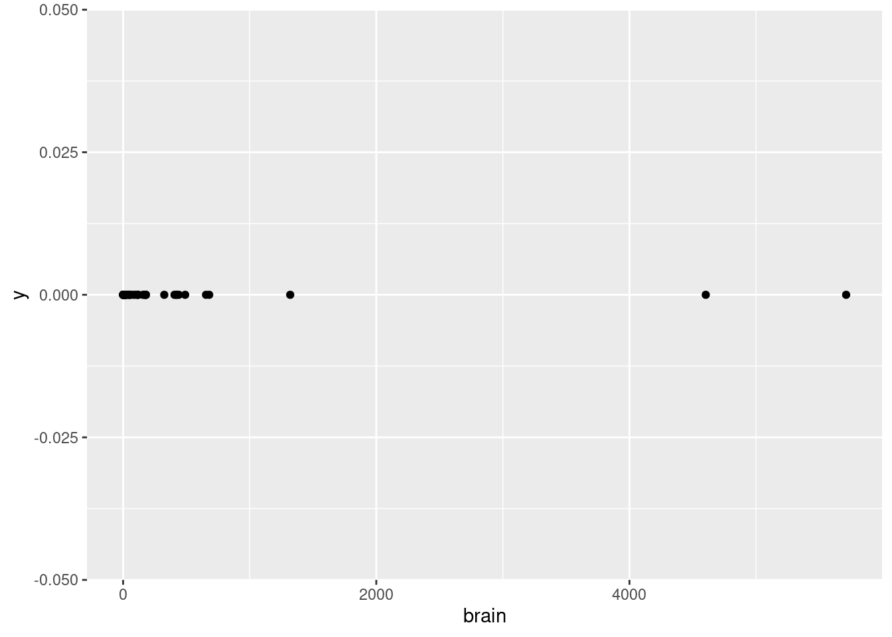

As Tukey originally framed it, exploratory data analysis is about detective work – looking for clues, examining data for patterns, compiling evidence. And one of the first steps of this detective work is to examine the individual variables in your data. This is like getting a few of the ground facts before you start looking for leads. Another way to think about it is that carefully looking at each of the variables in your data set can give you a kind of first pass understanding that may help you find interesting patterns, or perhaps even more importantly, alert you to issues before you go too far in pursuing a particilar line of investigation.
This tutorial will take you through some of this process, focusing on the kinds of questions you should be asking as you investigate, and a few data visualization tools that can help. This is not exhaustive. Since EDA is exploratory by nature, there will always be other things to consider and additional tools depending on what you are looking at and what your goals are. But the questions and tools here should give you a solid start in the process.
Loading packages and some sample data
In this tutorial, we’ll use packages from the Tidyverse, as well as the scales package. We will also use a sample data set which is a slightly modified version of the mammals data set.1
1 This data set is originally from Weisberg (1985), supplied in the MASS package (Venables & Ripley, 2002). I’ve added a diet column, and put the species in an actual column, instead of the data frame from MASS which uses row names to store species.
library(tidyverse)
── Attaching core tidyverse packages ──────────────────────── tidyverse 2.0.0 ──
✔ dplyr 1.1.4 ✔ readr 2.1.5
✔ forcats 1.0.0 ✔ stringr 1.5.1
✔ ggplot2 3.5.2 ✔ tibble 3.2.1
✔ lubridate 1.9.4 ✔ tidyr 1.3.1
✔ purrr 1.0.4
── Conflicts ────────────────────────────────────────── tidyverse_conflicts() ──
✖ dplyr::filter() masks stats::filter()
✖ dplyr::lag() masks stats::lag()
ℹ Use the conflicted package (<http://conflicted.r-lib.org/>) to force all conflicts to become errors
library(scales)
Attaching package: 'scales'
The following object is masked from 'package:purrr':
discard
The following object is masked from 'package:readr':
col_factor
mammals <-read_csv("mammals.csv")
Rows: 62 Columns: 4
── Column specification ────────────────────────────────────────────────────────
Delimiter: ","
chr (2): species, diet
dbl (2): body, brain
ℹ Use `spec()` to retrieve the full column specification for this data.
ℹ Specify the column types or set `show_col_types = FALSE` to quiet this message.
A starting point: what values are present?
As a first step, one of the most basic things to know about each of your variables is what kinds of values you have. You should investigate this from both “kind” and “observed” angles. What I mean by that is you should see what kind of values you have (numeric? character? factor? geographic? time stamp? something else?) and then you should look at what values are actually observed. A quick visualization may help with both of these. The key is to have a clear sense of what you are plotting, so that you can interpret what you see.
Starting with points
There are many different basic kinds of visualizations,2 and you may eventually gravitate towards certain ones as you get more practiced in the EDA process. But if you are really not sure, then simply plotting points may be a good initial place to start.
2 Munzner (2014) uses the term idiom for a general type of plot. I think that’s a good term, as a way of capturing the fact that, for example, everything we call a “scatterplot” has some basic things in common, but not all scatterplots share all of the same features. Some geoms in ggplot2 correspond to idioms, like geom_histogram(), but others are a little more basic or flexible, like geom_bar(), and might map to a few related idioms. The point is that there is not a one-to-one relationship between these different labels that we apply to “kinds of visualizations.”
Why points? When you are starting to visualize your data, one guiding principle is to try to visualize every data point. If you are visualizing a variable, that variable is a column of values in a data frame, and you should be trying to get a feel for the data by looking at each value, not just a summary like a mean or range. The nice thing about plotting points is that you know that there should be a visual point/dot for each data point.
In ggplot2, we can use geom_point() for this, but this geom requires both \(x\) and \(y\) coordinates. So if we are plotting points for a single variable, we would map that variable to either \(x\) or \(y\), and then map the other coordinate to either a constant like zero, or something arbitrary like row number or even a random number.
Given all this, let’s start our investigation of the mammals data by plotting the body variable on the \(x\)-axis vs. just a flat zero value on thje \(y\)-axis. This variable represents an average body weight (in kilograms) for each of the species in the data.
ggplot(mammals, aes(body, 0)) +geom_point()
Interpreting points for continuous values
What does this show us? First of all, by looking at the \(x\)-axis, we can see that the values range from close to zero to larger than 6,000. Second of all, we can tell that this is a continuous numerical value, because we can see that many points are close to other points, but they are not arranged in some kind of strict grid. In other words, it looks like any numeric values are possible, in a pretty wide (but apparently positive) range. This is all good, because it confirms what we would expect from a variable representing weight. If all of the animals were categorized at having weights rounded to the nearest 100 kg, or if we saw negative values, or values in the tens or hundreds of thousands, we might have more questions, and we might realize there’s either something wrong with the data, or maybe it’s not being represented like we thought.
In other words, even just a simple plot like this is important for us to test our assumptions about this data. Does this pattern look plausible as a set of weight values (in kg)? Yes! Confirming basic assumptions is a key first step in EDA.
While we’re at it, let’s look at the other weight variable, the brain variable, which is supposed to represent the average brain weight (in grams, not kilograms).
ggplot(mammals, aes(brain, 0)) +geom_point()

How does this look?
Examining points in categorical data
But what about a different kind of variable, like diet or species? Let’s try the same point plot for diet.
ggplot(mammals, aes(diet, 0)) +geom_point()
Now we see just three dots, and the \(x\)-axis doesn’t show a range of numeric values, but three specific labels: “carnivore”, “herbivore”, and “omnivore”. This is very different from the visualization of weight. The first thing to notice is that this is categorical data, which should be obvious from the category labels and lack of numeric values. Second, we should notice that even though this should be plotting a different point for each data point, we only see three dots. Why?
This is a common problem called overplotting, and we will discuss strategies for managing this later. But the idea is that it only looks like three dots, because each of the data points is plotted in one of three positions. So there are basically a bunch of dots being plotted on top of each other, so you can’t tell how many there are. This is true whenever there is any degree of discreteness in the data. For example, if values are all rounded off to some degree, there might be many identical values, even in a variable that is theoretically continuous, like weight or height. But overplotting is especially prominent when you have only a few possible values, like with the diet variable here.
So what did we learn with this visualization? That there are three categories of diet, and every data point falls into one of those three. Why is this helpful? Again, this is a good check of assumptions. Maybe we weren’t sure what “diet” meant, and thought that maybe it would be specific plants or prey or something. Or maybe it should just be these three categories, but data entry problems ended up with mistaken values like “ominvore” or abbreviations like “herb”. In those cases, maybe we’d need to do some additional data cleaning before analysis.
Looking for this kind of basic issue is an important step before we can start looking for more interesting patterns, and even just a simple point plot like this can help us.
Now if we do the same thing with species, we have kind of the opposite problem:
ggplot(mammals, aes(species, 0)) +geom_point()
Now we see a lot of points, but the \(x\)-axis labels are so crammed together that it’s hard to tell what’s even being plotted. One simple trick for making things like axis labels easier to read is to simply flip the coordinates. Let’s put species on the \(y\)-axis to make those labels more legible, and set \(x\) to zero.
ggplot(mammals, aes(0, species)) +geom_point()
Now we have a much clearer picture. There are many species in this data! This matches what I said earlier, that each row of the data is a different species, so there should be only one data point per variable per species. But again, overplotting means that we can’t tell if this is true yet, because it’s possible that some species have many points, and they are just on top of each other. Still, we have verified that there are many species in the data, and those species names look like the kind of thing we would expect.
The next step: distributions
Once we know what kinds of values there are, the next natural questions are about how those values are distributed. In other words, which values are more common than others? This is an important follow-up for several reasons, as we’ll see.
This time, let’s start by looking at the distributions of our categorical variables, species and diet.
Counting categories
When you are talking about a distribution of categorical data, that boils down to a question of how many occurrences there are of each category. In ggplot, this is where the geom_bar() layer is helpful. Instead of displaying a bar for each data point, this will display a bar for each distinct category, but it will also count up the occurrences of each category, and set the height of the bar equal to that count.
This means we only need to give either an \(x\) or \(y\) value in our aes() mapping, and geom_bar() does the rest.
Let’s look first at species. I’ll start with a plot of species on the \(x\)-axis, but for the same reason as before, it helps us to switch that up to be on the \(y\)-axis, which is plotted second.
ggplot(mammals, aes(species)) +geom_bar()
ggplot(mammals, aes(y = species)) +geom_bar()
Now what do we see? First, the bars all look uniform, which means that for each value of species, there is the same number of data points. Furthermore, we can see that all of those bars go up to a value of 1. So this just confirms what we believed, where each species is represented only once in the data set. Again, this makes for a very boring-looking plot, but it is helping us confirm the structure of the data in a quick and visual way.
To contrast this, let’s use the same technique on diet (putting it back on the \(x\)-axis, since we know there are only a few categories).
ggplot(mammals, aes(diet)) +geom_bar()
Now, instead of having that overplotting issue where we couldn’t see how many dots were on top of each other, these bars are able to clearly show how the data are split into these three categories. Omnivores and herbivores are represented in similar amounts (though there’s one or two more herbivores), but both are represented much more thanb carnivores.
Is this an important observation or clue in our detective work? It depends! Maybe this raises questions about how the data was gathered, or whether it over-represents some kinds of mammals vs. others, or maybe based on other knowledge it simply confirms that the data matches an expectation than carnivores are less common. Or maybe it doesn’t mean anything. Not every piece of information in an investigation is a “clue” to some interesting pattern! Sometimes it’s just good to know the basic facts, in case something becomes relevant later.
A more practical point here is that if you already know some variable is categorical, maybe starting with geom_bar() is a better idea than geom_point(), since we can see both the categories and the associated counts all at once.
Plotting continuous distributions
What about our other variables, body and brain? Since these variables appear to be continuous, plots of counts are rarely helpful. In other words, when values can vary continuously, unless there is a very large amount of data, or unless there is a lot of “rounding off” in the values, it can be relatively unlikely that any two data points can have the same values.
We can see this in the current data if we force the body variable to be categorical by plotting it as a factor3 (and plotting on the \(y\) axis to make the labels legible).
3 Note that when you apply a transformation or function to a variable inside of a ggplot() call, this does not actually alter the original data frame. So it’s a convenient way to visualize transformations without having to alter the underlying data frame any.
We can see here that there are exactly two values that happen to be repeated: the weight 3.5 occurs twice and the weight 0.023 occurs twice. But unless you specifically want to know if any specific values repeat exactly, this kind of bar plot is not very helpful.
Recall the “point” plot again:
ggplot(mammals, aes(body, 0)) +geom_point()
We can see an overall pattern where most of the points are concentrated at lower values, and only a couple of points extend past 1,000 kg. When we talk about distributions of continuous values, this is what we want to know: where in the range are the data more or less concentrated? In other words, what is the shape of the distribution?
Binning with histograms
One classic way to examine the distribution shape of continuous values is to use a binning technique. That is, we can designate narrower sub-ranges of the data – say, every few kilograms – and in each of these bins, we can count up how many data points fall in that range. We can then plot these binned counts as bar plots, and the result is a histogram.
Let’s look at default histogram using geom_histogram().
ggplot(mammals, aes(body)) +geom_histogram()
`stat_bin()` using `bins = 30`. Pick better value with `binwidth`.
We see a very tall bar close to zero, and then two much shorter bars, followed by two short bars spaced further out. This indicates what we could partially see in the point plots, that nearly all of the body weight values are clumped at the low end of the range, with a very rapid drop-off of concentration at higher weights.
One challenge with histograms is determining the bin width. However, because different bin widths can reveal different things, there is rarely one “correct” bin width, and it is often a good idea to examine a few different widths.
In ggplot2, the default is to set the bin width such that it divides the data into thirty bins. This is a reasonable middle-ground default, but ggplot2 likes to remind us that this is just a default, and that we should investigate others. This is good advice.
In this particular data, we’re not likely to see much difference, since the data is so highly concentrated in the bottom part of the range. For example, we could narrow the bins to every 10 kg using the following code, and we’d still see most of the data concentrated in a single bin at the bottom of the range:
What we really need to do here is to transform our data first. We will discuss transformations more throughly elsewhere, so I will simply apply a transformation and label-adjustment to plot the same data on a (base-10) logarithmic scale:4
4 Logarithmic transforms are often good ideas when the data is highly right-skewed like it is here, but also when the data is all more positive than zero, and when larger values are at least several orders of magnitude larger than smaller values.
`stat_bin()` using `bins = 30`. Pick better value with `binwidth`.
Now we can see an entirely different shape! With the log transform, the data is almost looking close to a normal distribution. However, we may still want to experiment with bin widths. We just need to specify those widths on a “log kilogram” scale rather than a kilogram scale. This first plot has wider bins:
Nevertheless, looking at different bin widths can give you a healthy perspective, preventing you from fixating too much on a pattern that may be at least in part an artifact or illusion dependent on the bin widths.
Density plots are a complementary tool to histrograms
Particularly when the data is relatively sparse, histograms can seem like they over-emphasize gaps or small differences in distribution shape. Another way to visualize univariate distributions is with a density plot. In practical terms, you can think about a density plot as a kind of “smoothed” histogram. More literally, a density plot is a version of a probability density plot, where the values on the \(y\)-axis are scaled so that the area under the density curve sums to 1. The shape of the curve still reflects the concentration of values, but it is calculated according to a more complex algorithm than the simple binning of histograms.
Let’s look at a density plot of the (log transformed) body weight variable:
As you can see, it’s a much “smoother” shape, but it still follows the same contours. If you would like to plot a histrogram and density plot superimposed on each other, you need to apply a special transformation to the \(y\) values in the histogram. Essentially, you need to put the histogram on the same scale as the density plot, otherwise one or the other may not be visible at all.
Note that using the after_stat(density) construct is the currently recommended method in ggplot2. Older examples may show a different construction that looks like y = ..density.., but ggplot2 warns us that this is deprecated, and may be removed later as an option.
`stat_bin()` using `bins = 30`. Pick better value with `binwidth`.
We can improve how this superimposition looks if we alter the histogram bin widths, and change the histogram color to a lighter shade of gray.
This plot is just to illustrate what I meant when I said that a density plot is like a “smoothed” histogram; they both show the same overall patterns, even though histograms typically look more “jagged” or “noisy”.
Finally, you can also change how “noisy” a density plot looks, roughly analogous to changing the binwidth in a histogram. The parameter in ggplot2 is called adjust. It defaults to a value of 1, so if you want to “smooth over” ups and downs even more, you can increase the value above 1, and if you want it to look more “fine-grained”, you can decrease the value, though adjust always needs to be larger than zero.
Here are examples of smaller and larger adjust values:
Examining univariate distributions is an essential first step, but what exactly you are looking for can vary radically depending on the data and your goals. For example, here we saw that the distribution of body weight was much closer to a normal (aka Gaussian) distribuition after log-transformation, but even then, there appears to be a “shoulder” of sorts on the right side of the distribution. What should we make of this? At this stage, maybe nothing, other than noting the observation. We don’t really know anything about how these species were selected, so would we even care if the distribution is normal or not?
It’s often the case that looking at univariate distributions doesn’t really give you any “clues”, in the sense of revealing exciting patterns. But that doesn’t mean it’s not important. Sometimes “boring” is what you are hoping for, because if we saw something truly suprising, like negative weight values, or diet categories that looked like typos, that means we might need to do some data cleaning before proceeding.
So even if investigating univariate distributions can sometimes feel like “janitorial” work, it is still essential to a good investigation. What if something had contaminated a crime scene and the detectives didn’t check before arresting the wrong person?
But sometimes, univariate distributions can reveal more subtle, interesting patterns that warrant follow-up investigation. You’ll never know what you’ll find, which is why you always need to look!